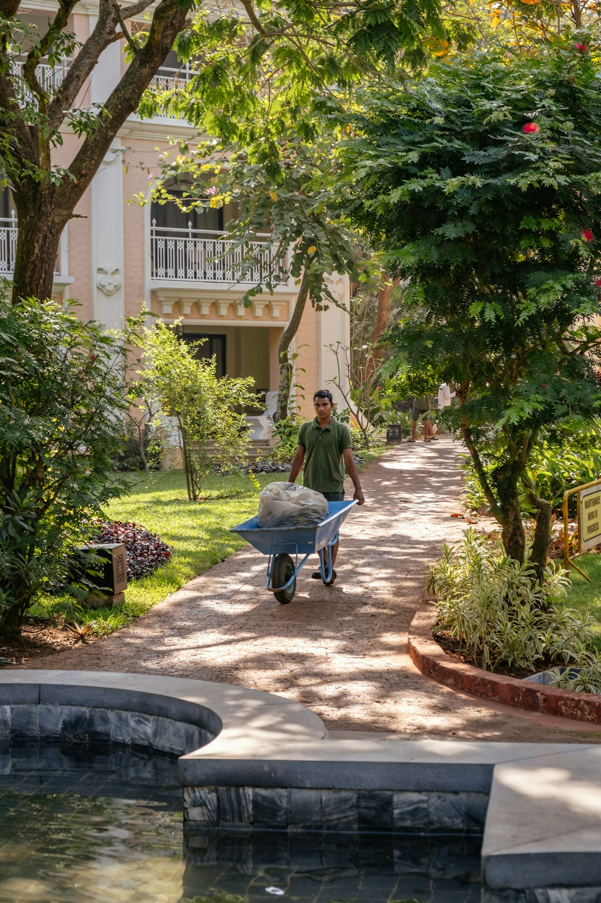
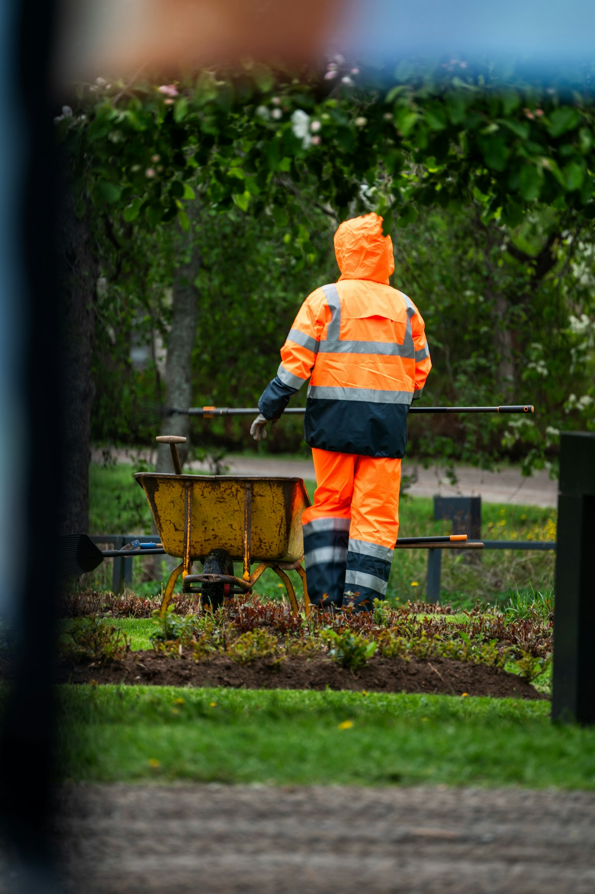
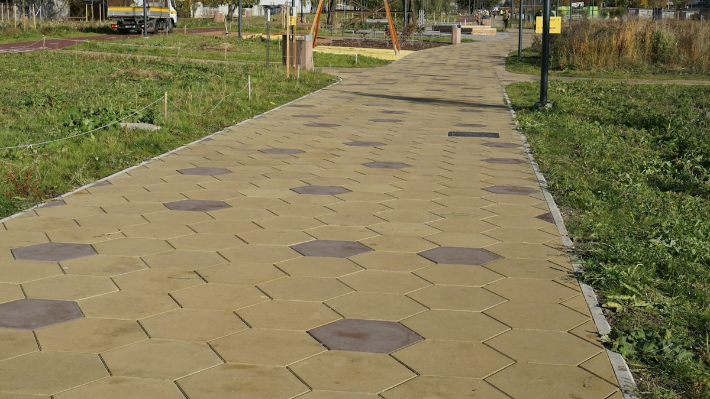
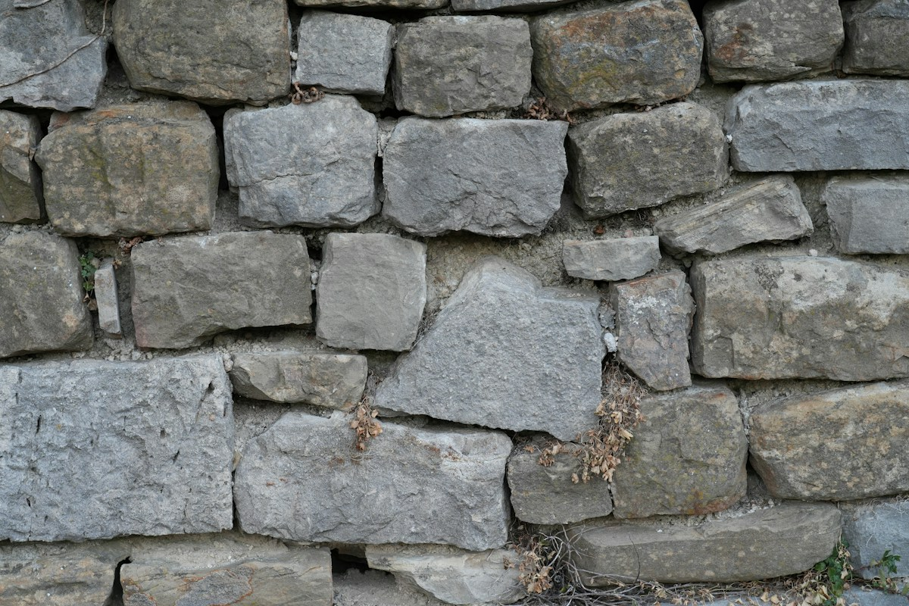
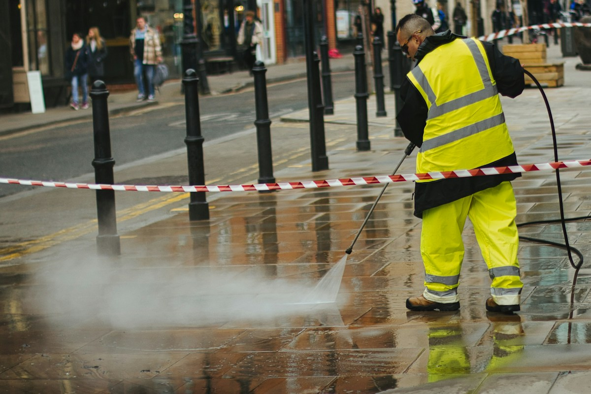

Gartenpflege
Pflege von Gärten und Aussenräumen, damit alles in Form bleibt.
Entwurf von Sapir Harel, nicht die offizielle Seite von Lopes R.

Zürich 8055
Garten.
Bau.
Reinigung.
Ein Einzelunternehmen in Zürich. Alles aus einer Hand, für Haus und Aussenraum.
Was wir machen

Pflege von Gärten und Aussenräumen, damit alles in Form bleibt.

Gestaltung von Aussenräumen: vom Plan bis zum fertigen Platz.

Handfeste Arbeit, die hält. Auch dort, wo Garten und Bau zusammenkommen.

Sauber übergeben: Flächen und Räume werden gründlich gereinigt.
Der Betrieb
Lopes R ist ein Einzelunternehmen in Zürich. Der Betrieb macht Gartenpflege, Landschaftsbau, Bauarbeiten und Reinigung.
Das Angebot umfasst Pflege und Gestaltung von Aussenräumen. Sie müssen nicht mehrere Firmen suchen: Garten, Bau und Reinigung kommen aus einer Hand.
Schreiben Sie uns
Rufen Sie an oder schreiben Sie eine Mail. Kurz sagen, worum es geht, das reicht.